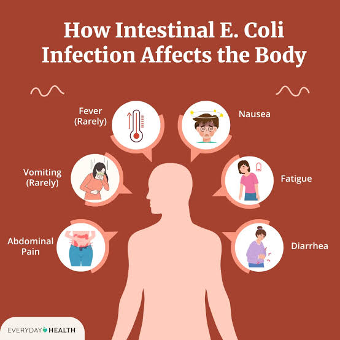
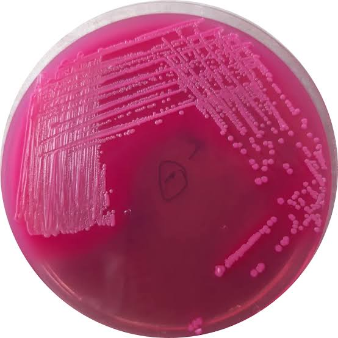
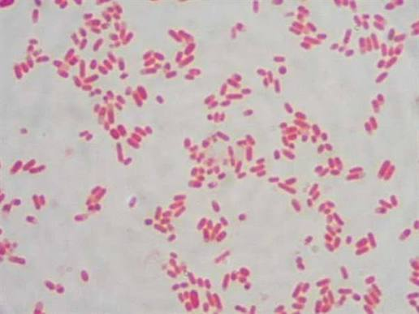
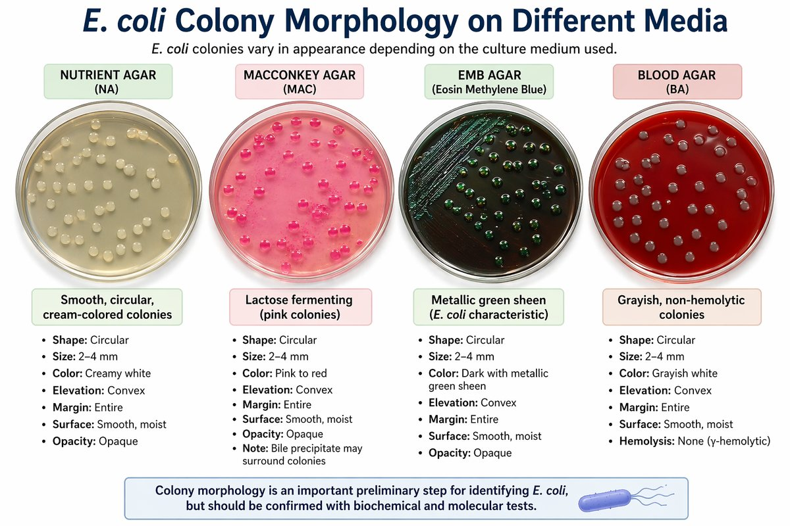
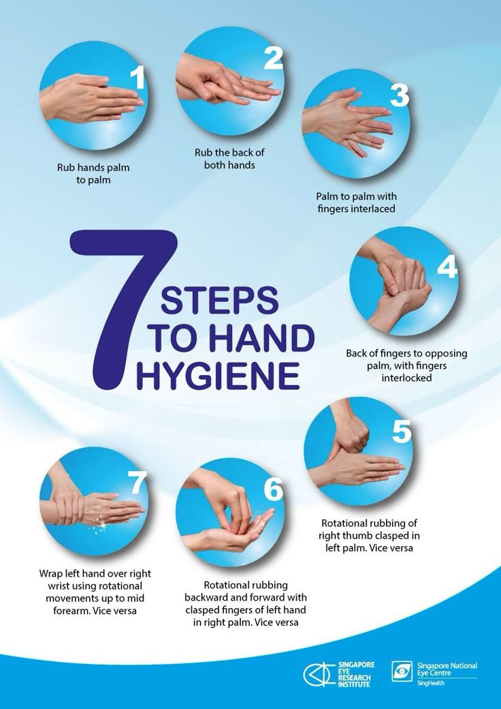

Images are used for educational purposes only. The symptoms infographic belongs to Everyday Health and the hand hygiene poster to the Singapore National Eye Centre; other images were collected from the web and remain the property of their owners.